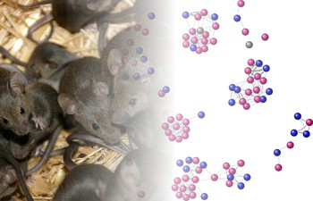

Payoffs of local and global network structures: Reproductive career paths in wild house mice
This project is related to our research lines: Structure and dynamics of animal societies and Structure and dynamics of online social networks
Duration 36 months (May 2012 - April 2015)
Funding source Swiss National Science Foundation (Grant CR31I1_140644 / 1)
Project partner until November 2013: Prof. Barbara König, Evolutionary Biology and Environmental Studies, University of Zurich (Switzerland)
Why do individuals establish social bonds? To answer that question we focus our data-driven modeling approach on social interactions in animal societies and humans. Specifically, in the first part of the project we analyse data obtained from a wild population of house mice in their natural environment. In the second part, we extend our studies to analyse also collaboration networks of scientists and software developers. The project is really interdisciplinary, as it combines methods from different domains (social network analysis, machine learning, agent-based modeling) to analyse longitudinal and panel data from various realms.
We aim at a comprehensive understanding why individuals invest in the formation of social networks, by revealing the hidden principles underlying their decisions. Our goal is to expose the relation between success and social interaction strategies, both at the individual level and at the level of larger groups. For these, different measures of success apply, e.g. the number of offsprings in animals, the number of citations in scientific publications, the number of bugs fixed by developers. Fine grained data about the social interactions of the actors, e.g. the co-location or inheritance network of mice, the co-authorship network of scientists and the assignments between developers, allow us to relate success and strategic behavior in a statistical manner, for which we particularly apply machine-learning approaches.
The project makes an important contribution, both theoretically and empirically, in identifying the incentive mechanisms that lead to the formation and the change of social networks. Our results shed new light on the relations between the individual effort invested in social bonding, the resulting individual payoff, as well as the position and role of individuals in a network.

Predicting Scientific Success Based on Coauthorship Networks
|
[2014]
|
|
Sarigol, Emre;
Pfitzner, Rene;
Scholtes, Ingo;
Garas, Antonios;
Schweitzer, Frank
|
EPJ Data Science,
pages: 9,
volume: 3
|
more» «less
|
Abstract
We address the question to what extent the success of scientific articles is due to social influence. Analyzing a data set of over 100000 publications from the field of Computer Science, we study how centrality in the coauthorship network differs between authors who have highly cited papers and those who do not. We further show that a machine learning classifier, based only on coauthorship network centrality measures at time of publication, is able to predict with high precision whether an article will be highly cited five years after publication. By this we provide quantitative insight into the social dimension of scientific publishing - challenging the perception of citations as an objective, socially unbiased measure of scientific success.
Nest attendance of lactating females in a wild house mouse population: Benefits associated with communal nesting
|
[2014]
|
|
Auclair, Yannick;
Koenig, Barbara;
Ferrari, Manuela;
Perony, Nicolas;
Lindholm, Anna K.
|
Animal Behaviour,
pages: 143-149,
number: 92
|
more» «less
|
Abstract
Among species providing uniparental care, the caring parent faces time constraints and may have to compromise offspring care/protection for self-maintenance. In most mammalian species females raise their offspring without receiving help from males. Communal nesting, when multiple females share a single nest where they rear their pups together, may have evolved as a mutually beneficial cooperative behaviour to reduce mothers' nest attendance without increasing the time their offspring are left alone. We tested this hypothesis using data collected in a free-living house mouse population where reproduction occurred in nest boxes and was closely monitored. Individuals were fitted with transponders allowing automatic recording of their location, and a genetic parentage analysis confirmed maternal identity. Compared to mothers raising their pups solitarily, communally nesting mothers spent less time inside their nest. Their pups, however, were left alone for a similar amount of time as solitarily raised pups. The time communal litters were left alone did not covary with the kinship of communally nesting females. These results indicate that communally nesting mothers can allocate more time to foraging or territorial defence without impairing the amount of maternal attention received by their offspring. Nevertheless, communally nesting mothers showed some overlap in their stays at the nest. Offspring may benefit from more regular meals while mothers may gain information on the partner's contribution to combined maternal care which could potentially prevent cheating.
Remarks
Featured Article in the June 2014 issue of Animal Behaviour (DOI: 10.1016/j.anbehav.2014.04.039).
How random is social behaviour? Disentangling social complexity through the study of a wild house mouse population
|
[2012]
|
|
Perony, Nicolas;
Tessone, Claudio Juan;
Koenig, Barbara;
Schweitzer, Frank
|
PLOS Computational Biology,
pages: e1002786,
volume: 8,
number: 11
|
more» «less
|
Abstract
From the synchronised beauty of fish schools to the rigorous hierarchy of ant colonies, animals often display awe-inspiring collective behaviour. In recent years, principles of statistical physics have helped to unveil some simple mechanisms behind the emergence of such collective dynamics. Among the most elementary tools used to explain group behaviour are random processes, a typical example being the so-called “random walk”. In this paper, we have developed a framework based on such random assumptions to study the spatial and social structure of a population of wild house mice. We introduce the concept of perceptual landscape to describe the spatial behaviour of animals, whilst including all sensory and social constraints they are subject to: the perceptual landscape effectively maps the environment of animals as they perceive it. By applying our assumptions to a multi-agent model, we are able to reveal that much of the high-level social behaviour observed in the mouse population can indeed be explained through the many interactions of randomly moving individuals. This raises the question of how much of what we often regard as complex natural phenomena may, in fact, be the result of exceedingly simple forces.
A stochastic model of social interaction in wild house mice
|
[2010]
|
|
Perony, Nicolas;
Koenig, Barbara;
Schweitzer, Frank
|
Proceedings of the European Conference on Complex Systems 2010
|
more» «less
|
Abstract
We investigate to what extent the interaction dynamics of a population of wild
house mouse (Mus musculus domesticus) in their environment can be explained
by a simple stochastic model. We use a Markov chain model to describe the transitions
of mice in a discrete space of nestboxes, and implement a multi-agent simulation of the
model. We find that some important features of our behavioural dataset can be
reproduced using this simplified stochastic representation, and discuss
the improvements that could be made to our model in order to increase the accuracy
of its predictions. Our findings have implications for the understanding of the
complexity underlying social behaviour in the animal kingdom and the cognitive
requirements of such behaviour.
|